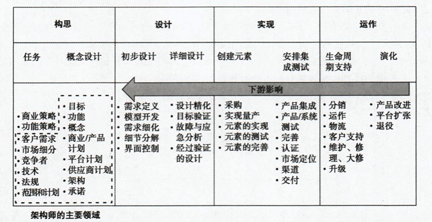

系统思维，简单地说，就是把某个疑问、某种状况或某个难题明确地视为一个系统，也就是视为一组相互关联的实体。系统思维不等于系统化地思考。
系统是由一组实体和这些实体之间的关系所构成的集合，其功能要大于这些实体各自功能之和
产品是能够交换或具备交换潜力的事物。有一些事物是产品但不是系统，还有一些事物是系统但不是产品，但由于很多事物既是产品（可供交换）又是系统（含有很多相互联系的实体），因此这两个词常混用
涌现是指系统在动作时所表现、呈现或浮现出的东西。我们之所以要构建系统，就是为了取得令人满意的涌现物。最明显最关键的涌现物就是功能。功能是系统所做的事情，也就是它的动作、产出或输出。除了功能之外，还会涌现出性能，就是系统动作或执行其功能的好坏程度，它是系统功能的一项属性
涌现原则：当各实体拼合成一个系统时，实体之间的交互会把功能、行为、性能和其他内存属性涌现出来。我们要思考并试着探寻系统所涌现出的预期属性和意外属性。
实体之间的交互会导致涌现物。涌现物指的是系统在动作时所表现、呈现或浮现出来的东西。系统的附加价值是由涌现物所赋予的
涌现的结果，使得变化以无法预知的方式进行传播
一个实体所发生的变化将会如何影响涌现出来的属性，是很难预测的
能够涌现出预期属性的系统，是成功的系统。不能涌现出预期属性或意外涌现出不良属性的系统，是失败的系统
系统同时具备形式与功能这两个特征。形式说的是系统是什么，而功能则说的是系统做什么
整体原则：每个系统都作为某一个或某些个大系统的一小部分而动作，同时，每个系统中也都包含着更小的一些系统。要整体地思考这些关系，并研发出与上级系统、下级系统和平级系统相协调的架构。
整体论认为所有的事物都以整体的形式存在并动作，而不单单是其各个部件的总和。这与化约论（还原论）相反，化约论认为我们可以通过仔细研究事物的各个部件来了解该事物
整体地进行思考，就是要把当前系统的各个方面都涵盖进来，要考虑可能会与谢谢你的关心系统进行交互的任何事物给系统所带来的影响及后果
更简单地说，整体地思考就是把与当前所要处理的疑问、状况及难题有关的所有事物（例如实体及关系）都考虑到
能够激发整体思维的办法包括结构化与非结构化的头脑风暴（脑力激荡）、框架、从不同视角进行思考，以及对大环境进行考量等
聚焦原则：在任何一个点上，都能发现很多影响系统的问题，而其数量已经超出了人的理解能力。因此，我们必须找出其中最关键、最重要的那些问题，并集中精力思考它们。
在做生意时间点，我们都可以通过整体思维，来找出可能影响当前系统的数十个，乃至数百个问题
为了随时能密切关注重要的问题，我们必须学会抛开其他一些问题
受到关注的那些方面，很少会出差错
我们要对这一大批问题进行处理或筛选，以找出对当前的时间点或当前的动作情况较为重要的那些问题。要集中思考困难的问题，而不要先急着去解决那些简单的问题
创建抽象机制时的指导原则：
系统边界位于系统与大环境之间。在划定系统边界时，我们可能会考虑下列问题：
把需要分析的实体包括进来（如果我们的目标是理解某个机制）
把创建设计方案所必备的要素包括进来（如果我们的目标是创建设计方案）
把我们负责实现和操作的东西包括进来（如果我们的目标是体现某种价值）
由规章、契约或其他法律制度所建立的规范边界
能够把系统与大环境区分开的传统做法或习惯做法
我们必须遵从的一些接口定义或标准，包括与供应商之间的关系
形式是系统的物理体现或信息体现，它存在或有可能于某段时间内稳定而无条件地存在，且对功能的执行起到工具性的作用。形式包括实体的形式及实体间的形式关系。形式先于功能的执行而存在。形式是系统/产品的一项属性。
对象过程方法（OPM）：系统只需要用两类抽象物就可以表示出来，一类是对象，另一类是过程。“把对象与过程结合起来，能够忠实地将系统的架构、功能及行为描述成单一且连贯的模型，这几乎适用于任何领域”
形式关系或结构，是形式对象之间有可能在某段时间内稳定而无条件存在的关系，它们可能有助于功能交互的执行
形式关系有三大类：
二元原则：所有由人类构建而成的系统，其本身都同时存在于物理领域和信息领域中。有时我们需要明确地从物理角度和信息角度同时对系统进行思考
二元论认为事物可以从两个领域同时进行思考，具体到系统架构中的二元原则来说，就是同时从物理领域和信息领域进行思考
我们可以把一个系统有效地视为信息系统，该系统其实是对存储并处理相关信息的那些物理对象所做的抽象
我们也可以把一个系统视为物理系统，该系统存放着所有与其形式有关的信息，但它未必存放着与功能有关的信息
功能：是可以产生或促进性能的活动、操作或转换。在经过设计的系统中，功能就是使系统得以存在的动作，它最终会令系统的价值得到体现。功能是通过形式来执行的，形式对功能起着工具性的作用。功能要从实体之间的功能交互中涌现出来
功能谈的是活动的问题，而形式谈的则是存在问题
操作数是一个对象，因而有可能会在某段时间内稳定且无条件地存在。这种操作数对象，不需要先于功能的执行而慧，且会以某种方式为功能所操作。操作数可能会由功能中的过程部分来创建、修改或消耗
价值是有着一定成本的收益。利益就是由系统所创造的财富、名望或功用。观察者会对价值进行主观判断。成本是一种指标，用来衡量为了取得利益所必须付出的代价
受益原则：好的架构必须使人受益，要想把架构做好，就要专注于功能的涌现，使得系统能够把它的主要功能，通过跨越系统边界的接口对外展示出来。
系统所产生的利益，是通过其对外展示的主要功能而提供的
在系统想要 对外界展现的功能中，通常有一个功能，是我们当初设计这个系统时所定义的主要功能，如果缺了这个功能，那么系统就失败了
利益是在系统边界处体现出来的，它一般通过接口得以体现
系统架构是概念的体现，是对物理的/信息的功能与形式元素之间的对应情况所做的分配，是对元素之间的关系以及元素同周边环境之间的关系所做的定义
价值与架构原则：价值是有着一定成本的利益。架构是由形式所承载的功能。由于利益要通过功能而体现，同时形式又与成本相关，因此，这两个论述之间形成一种特别紧密的联系。研发优秀的架构，就相当于体现适当的价值，优秀的架构是用极简的形式来达成令人满意的功能，而适当的价值则是由极少的成本所创造出来的利益。
工具对象怎样与内部过程相映射？
与特定解决方案无关的功能原则：糟糕的系统规范书，总是把人引向预先定好的某一套具体解决方案、功能或形式上，这可能会令系统架构师的视野变窄，从而不去探索更多的潜在选项。尽量使用与特定解决方案无关的功能及语言结构来描述系统，以便使架构师能够意识到该问题的探索空间其实是相当广阔的
概念是我们对产品或系统所形成的图景、理念、想法或意象，它把功能映射到形式。它是对系统所做的规划，描述了系统的动作方式。它能够使人感觉到系统会如何展示其功能，也能够体现出对系统的形式所做的抽象。它是对系统架构的一种简化，有助于我们对架构进行宏观的探索。概念虽然不是产品/系统的一项属性，但它却是形式与功能这两项属性之间的一种观念映射。
架构师：
消除上游歧义，创造系统边界，明确系统目标
解读公司策略和职能策略
解读对竞争市场所做的分析
听取用户、受益者、客户或其代表人的意见
考虑企业及延伸的供应链的能力
考虑系统的动作情况及动作环境
适当地注入技术
解读现有的和将来有可能出现的法规对系统造成的影响
推荐一些标准、框架及最佳实践方式
根据上游的影响来制定系统的目标
概括本系统的图景
管理复杂度
分解形式和功能
阐明功能与形式元素之间的对应关系
定义子系统之间以及系统与外围环境之间的接口
配置子系统
管理灵活性与最优性
确定模块化程度
清晰地体现纵向策略和横向策略
在自行设计生产与外包之间进行权衡
控制产品的演化
架构师角色原则：架构师的角色是解决歧义、专注创新，并简化复杂度。架构师致力于创建那种能够体现价值并具备竞争优势的优雅系统，他们要定义系统的目标、功能及边界，要创建出能够融合适当技术的概念，要对功能与形式之间的映射情况进行分配，也要定义接口与体系，并对系统做出抽象，以管理其复杂度
由于大多数系统中都有一些模糊而复杂的因素需要进行权衡，因此架构最好是能够由一个人或一小群人来创建
架构师一方面要对系统进行整体的观察，另一方面也要专心解决对设计至关重要的那几个问题
架构师并不执著于某一种方法，而是会适当地采用不同的框架、视角和范式来进行架构
歧义原则：系统架构的早期阶段充满了歧义。架构师必须解决这种歧义，以便给架构团队写出目标，并持续更新该目标
只有在接受了不确定性之后，才有可能开始进行开发
一般来说，没人能对架构工作的上游过程进行设计或严格管控，所以，不要盼着上游能够毫无歧义 。上游总是会给我们带来一些未经整理的、不完整和互相矛盾的输入信息
不确定中也隐藏着机遇，它并非总是坏事
歧义包括已知的未知和未知的未知，也包括矛盾的信息和错误的假设
在与上游的影响因素进行对接的接口处，歧义尤为明显，因为没有人能够对上游过程进行设计
应该找出各种不确定因素，并按照优先顺序对其进行排列，以更于管理
架构师交付的成果：
一套清晰、完整、连贯的目标（其中的重点是功能方面的目标）。架构师自信这套目标（有80%-90%的概念是可以达成的）
对系统所在的大环境，以及（包括法律法规与行业标准方面的）整个产品环境所做的描述
系统概念
系统的操作概念，其中包括系统在意外情况和紧急情况下的动作
系统的功能描述，其中至少要有两层分解。该描述中包含对系统对外界所展现的主要功能和次要功能所做的描述，包含内部操作数和内部过程所构成的过程流，包含非理想因素、支持过程及接口过程，也包含一套确保功能分解得以执行的工序
对形式所做的两细分，对功能与形式之间的映射所做的分配，以及这一层级 上的形式结构
对所有的外部接口以及一套实现接口控制的过程所做的详细描述
一套涉及开发成本、工期、风险以及设计计划与实现计划的观念

现代实践压力原则：现代的产品开发过程是由同时工作着的多个分布式团队来进行的，而且还有供应商的参与，因此，它更加需要有优秀的架构。架构师要认清这一趋势，并且要认清该趋势给架构过程带来的影响
由于要通过并行式的开发来提升产品开发速度，因此，初始的概念决策就显得更为重要了
由于要把决策权尽量下放（赋权），并且要使用分布式的或不在同一处工作的团队来进行开发，因此，需要更加强调良好的协调能力以及宏观的设计指导能力
由于供应商会在较早的时候参与到PDP中，因此，架构概念及架构基线就显得更为重要了，如果定得好，那么供应商这一因素可以使我们对系统所做的分解更加清晰，但如果定得不好，则会给系统的分解工作带来障碍
架构决策原则：架构决策是设计决策的一部分，其影响力非常深远。它们与功能和形式之间的映射有关，它们划定了性能的范围，它们把对最终产品所做的关键权衡蕴含了进来，而且通常会在很大程度上决定着产品的成本。我们要把架构决策与其他决策分开，并且要提前花一些时间来谨慎地决定这些问题，因为以后如果想变更，会付出很高的代价
架构之间的根本区别是由架构抉择所导致的。比如，汽车有几个驱动轮？飞机是否需要尾翼？算法是否需要实时运行，等等
架构决策与设计决策不同。洗车座椅是用皮料还是布料，这属于设计决策，而非架构决策。它不会对技术参数或重要的指标构成实质影响。选皮料还是选布料，只会影响成本，而且还是以一种可以预测的方式来影响的。这种决策，不太可能产生涌现物
要尽早地找出架构决策点，并谨慎地做出决策，因为错误的决策会对最终产品的实现产生无可挽回的阻碍作用，无论在细节设计或组件优化方面做多大的努力，也没有办法修复重大的架构问题
遗留元素复用原则：由人类所构建的系统，都会在概念上或是从物理/信息的意义上，对遗留元素进行复用。要透彻地理解遗留系统及其涌现属性，并在新的架构中把必要的遗留元素包括进来。
遗留系统中含有一些我们还没有彻底了解或彻底领悟的属性，如果对它进行全新的设计，那么这些属性可能就会丢失
遗留系统所依据的那套架构，通常是随着时间逐步修正出来的。架构师应该对早前的那套架构在新系统中的定位进行评估，看看它是否能够较好地满足新系统的目标，以及是否能够较好地反映出经过修正之后的假设
由于遗留系统原先并不是针对 目前的情境而设计的，因此，要想在目前的系统中使用遗留元素，可能需要先对其进行大规模的重新测试
应该把设计元素用文档记录下来，以便将来可以更加方便地复用这些元素
产品进化原则：系统必须进化，否则就会失去竞争力。在进行架构时，应该把系统中较为稳固的部分定义为接口，以便给元素的进化提供使得。对系统的进货情况进行规划时，要有宏观的视野，而且要预留足够的资源
开端原则：在产品定义的早期阶段所列出的（企业内部和企业外部的）利益相关者，会对架构产生极其重大的影响。因此，要谨慎地决定哪些利益相关者应该在项目初期参与进来，并且要思考他们会给架构带来怎样的影响
平衡原则：有很多因素都会影响并作用于系统的构想、设计、实现及操作。架构师必须在这些因素中寻求一个平衡点，使大多数重要的利益相关者得到满足
在由人类所构建的系统中，我们可能无法把每一个因素都列举出来，至于量化，更是不可能的事情。架构师必须在已经认识到的这些因素中做出权衡和妥协，以便针对这些已知的影响因素，来找寻能够满足它们的解决方案，同时还要认识到：由于除此之外尚有一些未加考虑的因素，因此，想要形成一种形式化的优化方案，或许是不太可能，甚至是没有意义的
系统必须作为一个整体来进行平衡，不能仅仅对其中每个元素单独进行平衡，然后将其相加
在各种需要平衡的因素中，架构师尤其要注意优化度与灵活度之间的平衡。一般来说，架构针对某个应用场景的优化程度越高，它适应新用例及新技术的那么少性就越低。反之，架构越灵活，变化的余地通常就越大，这进而使架构变得更加灵活，但同时也使其优化程度降低
系统问题陈述原则：对问题所做的陈述 ，确定了系统的高层目标，并划定了系统的边界。它会把内容从周边情境中分享出来。就问题陈述 的正确性进行反复的辩论和完善，直到你认为满意为止
歧义与目标原则：系统设计的早期阶段，通常包含着大量的歧义。架构师必须解决这些歧义，以便提出几条有代表性的目标并持续地更新它们。这些目标要完备而一致，要兼具挑战性和可达成性，同时又要能够为人类所解决
歧义包括已知和未知和未知的未知，也包括相互冲突的假设和错误的假设
一般来说，没有人能够对架构的上游过程进行设计或严格的控制，因此，我们不应该指望能出现毫无歧义的情况。我们总是会遇到一些相互不协调的、不完备的或彼此冲突的输入值
设定的目标，必须要能够代表受益者的需求。系统若想成功，则必须满足这些真正的需求
设定的目标，必须能够使人注意到竞争方面的压力，必须与企业的策略相一致，必须既有挑战性，又能够以可用的资源及科技来完成，同时，必须尊重监控机构的意见并重视与法律法规类似的影响因素
由于市场环境和客户都在不断演化，因此必须有一套流程，来对这些目标进行持续的重新考察及更新
创新原则：对于每一个有意义的现实问题来说，在我们给系统所设定的那些目标中，基本上都会出现一些矛盾。在架构中进行创新，就是要追求一种能够解决矛盾的好架构。为了尽可能地给创新提供机会，我们要抛开组织结构或人文环境方面的制约，将所有的目标都视为可以权衡的目标，以便考虑到每一种可能性：
由于架构工作是在策略层面所进行的设计，因此，架构师必须创建出总体的系统概念，以解决宏观目标中的矛盾
要想解决矛盾，我们应该发挥自己的创造力，来找寻一种能够使所有目标都得到满足的概念。若是现有的技术水平之下找不到这样的概念，那么还可以通过对目标进行修订来解决其中的矛盾
创新是一种迭代式的过程，要在目标未知的状况之下寻找路径。”创新就像开夜车。你虽然只能看到前灯照见的这么一点地方，但依然可以这样一直地开下去“
开动脑筋，在现有的信息片段之间进行新的联想，这样就会产生创新
要想找到新颖的解决方案，就得抛开思维定势，全面地去探索各种替代办法，否则，你所找到的解决方案就只会是对现有设计方案的渐进式改良
表面复杂度原则：现代系统的复杂程度，已经超过了人类的理解能力。因此，我们要对系统进行分解、抽象及分层，将其表面复杂度控制在人类所能理解的范围之内
必备复杂度原则：系统的必备复杂度取决于它的功能。把系统必须实现的功能仔细描述出来，然后选择一个复杂度最低的概念
必备的复杂度，就是系统要实现概念中所蕴含着的稳健功能时，所需具备的最小复杂度
无端的复杂度，是一种超出必要的复杂度，在实现任何一个概念中的任何一个稳健功能时，都不需要这种复杂度。因此，无端的复杂度应该尽量避免
”沿着简洁之路，从简单走向复杂，当这条路与完满的功能之路相交时，这个交点，就是优雅所在“
Principle of the 2nd Law 第二定律原则：系统的实际复杂度总是会超过必备复杂度。架构师要令实际复杂度尽量接近必备复杂度，同时又要把表面复杂度控制在人类可以理解的范围之内
分解原则：分解是由架构师主动做出的选择。分解会影响性能的衡量标准，会影响组织的动作方式及供应商的价值捕获潜力，还会影响产品的演变等其他很多方面。要尽可能多地根据这些因素来选好分解时的切入面，以便将系统的表面复杂度降至最低
2下1上原则：要想判断出对Level1所做的分解是否合适，必须再向下分解一层，以确定出Level2中的各种关系。然后对Level2中各元素之间的系统进行分组，并选出一种最能够反映分组情况的方式，来对Level1进行模块化
进行模块化时，应该尽量增加同一组内各元素之间的耦合程度，并尽量减少组与组之间的耦合程度。虽然未必总能奏效，但一般来说，这样做是有好处的
对Level1进行分组所需的真正信息，实际上包含在Level2中的那些相互关系中
因此，要想从Level0分解到Level1，我们应该直接向下分解到他们层（2下），到达Level2，对Level2进行适当的分组，然后采用这一信息来决定Level1的最终分解方式（1上）
优雅原则：对于身处其中的架构师来说，如果系统的必备复杂度较低，而且其分解方式能够同时与多个分解平面相匹配，那么该系统就是优雅的，对于外在的用户来说，系统如果能够体现出美感、具备较高的品质和较低的表面复杂度，那么它就是优雅的。架构工作要围绕着这些能够使系统变得优雅的属性来进行
架构决策及其衡量指标的属性
建模的广度与深度：架构方面的决策支持工作，关注的是建模的广度。也就是说，我们要以相对较低的保真程度来分析非常庞大的架构空间，这个空间中的架构，彼此之间有着很大的区别。而设计方面的决策支持工作，关注的则是建模的深度。也就是说，我们要以较高的保真程度来分析觉得是的设计方案。请注意，建模的广度与深度，本来就是两个需要互相权衡的因素
歧义性：设计问题和架构问题都具备歧义性。但由于架构问题所面临的不确定因素和不明确之外 ，是从开发过程的早期就开始出现 的，因此，它们会比设计问题所遇到的同类因素更多一些，这些因素的来源，也会更为庞杂一些（架构中的不确定因素，是指随机事件所产生的未知结果，而架构中的不明确之处，则是指陈述中所包含的不精确信息或模糊信息）
变量的类型：对于设计分析与优化来说，决策可以分成三类：连续决策、离散决策（也就是那种只能取整数值的决策）及类别决策（也就是那种可以从离散集中取做任意值的决策，离散集内的元素，是一些用来表示抽象的符号）。架构决策通常都是类别变量，有时可能是离散变量，但很少会是连续变量，原因在于，架构决策通常需要在不同的形式实体或功能实体之间做出选择，或是要在功能与形式的不同映射方式之间做出选择，而这种选择，本身就是类别式的选择
主观性：架构问题通常要涉及某些主观的衡量指标，这些指标用来反映本系统向利益相关者提供价值的能力。由于要处理的某些指标是主观指标，因此需要使用多属性效用理论或是模糊集等技术。此外，架构决策的主观性，还要求这种决策必须具备可追溯性
目标函数的类型：架构问题有时会在目标函数中使用相对简单的算式，但它们也经溃会使用一些简单的查找表。架构问题之所以不会大量使用数学算式是因为：1.由于架构问题主要强调的是广度，因此我们需要用不同类型的策略去评估不同类型的架构；2.由于模型的保真程度较低，因此我们必须用一些启发式的方法来代替复杂的计算；3.由于某些衡量指标比较主观，因此我们在制定这些指标的度量规则时，就会刻意设置一些有助于体现实际利益的计算方式
耦合与涌现：架构决策问题中的决策数量，与设计问题相比，通常是比较少的。但由于各种决策选项之间的组合方式特别多，因此架构问题所对应的架构空间，通常都是极其庞大的。这就表明，架构变量的耦合度通常都特别高。这是一个非常重要的特征，因为设计方面的问题在结构上一般都是解耦的，因此，我们可以利用某些非常强大的工具（例如动态规划技术中的马尔可夫性质）来对其进行处理，而架构变量的高耦合度，则使得我们没有办法利用这些工具
架构健壮程度原则：好的架构要朐应对各种各样的变化 。能够应对变化的那种架构，要么是比较健壮的架构，要么是适应能力比较强的架构。前者能够处理环境中的变化 ，而后者则能够适应环境中的变化。在帕累托效率方面最优的架构，通常都不是最为健壮的架构。因此，在选择架构时，要同时考虑帕累托最优性、健壮程度以及适应能力这三个因素
在进行架构的过程中，我们对输入值所做的假设可能会发生变化，此外，设计方案的下游执行过程和/或系统的操作环境，也有可能发生变化
位于帕累托前沿中的那些架构，有时未必能够最为稳健地应对各种变化。比方说，帕累托最优架构可能依赖于一项能够改变行业规则的技术，但这项技术的成熟程度却相当低。万一这项技术在开发系统时还没有准备好，我们应该怎么办？架构是否能够较为灵活地与另外一种技术相适配？在帕累托阳优性和健壮性之间所做的权衡，对于这个行业来说是否特别合理？可能有少数几种架构具备相当高的性能，但这些架构是否可行，则是架构师必须要决定的问题
为了评估健壮性，我们可以分析架构在多种技术场景和市场情境中的表现，然后先出在很多情况下都有着良好表现的那些架构。在对架构进行优化时，应该用模糊的帕累托前沿来代替普通的帕累托前沿，因为这样做能够发现更为健壮的架构
架构决策的耦合与整理原则：可以把架构理解成由少数的重要决策所产生的成果。这些决策之间是紧密耦合的，而且制定决策时的午后顺序也是很重要的。可以参照指标对决策的敏感度以及决策之间的连接度，来排定架构决策之间的先后顺序
架构决策通常都是相互耦合的。这种耦合关系，可能是由于约束规则所引起的，也可能是由于衡量指标而造成的。最紧密的耦合关系，是那种因为硬性的约束而形成的耦合关系，也就是说，如果某个决策选取了某个选项，那么另外一项决策就不能选取特定的值了
如果某项决策通过约束规则与其他很多决策紧密地耦合了起来，那么该决策就具备较高的连接度
各种衡量指标对架构决策的敏感程度各有不同
架构师应该首先对落在“第一象限”中的那些决策（也就是第三度和连接度都比较高的决策）做出判断，因为它们对剩下的选项具有极大的影响力